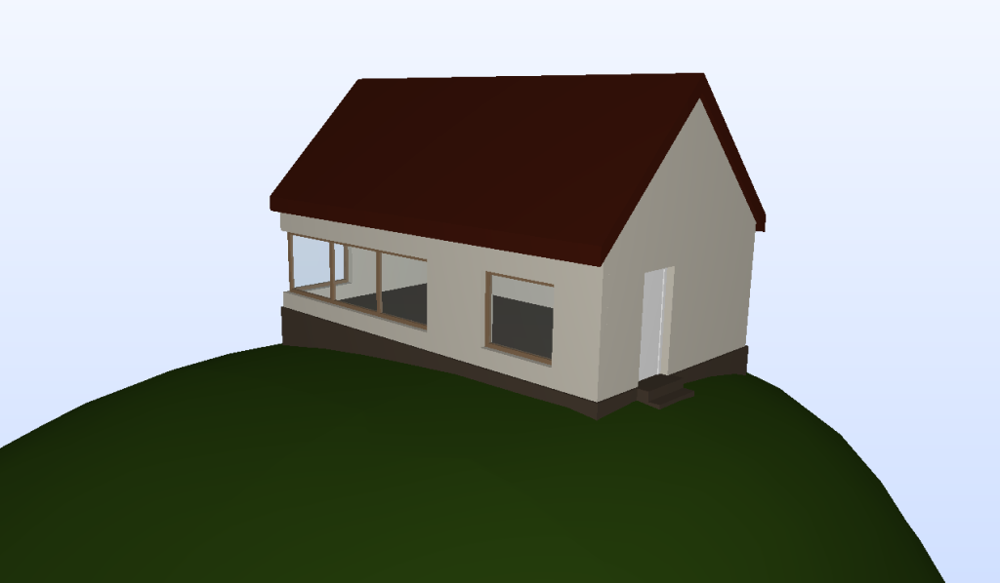
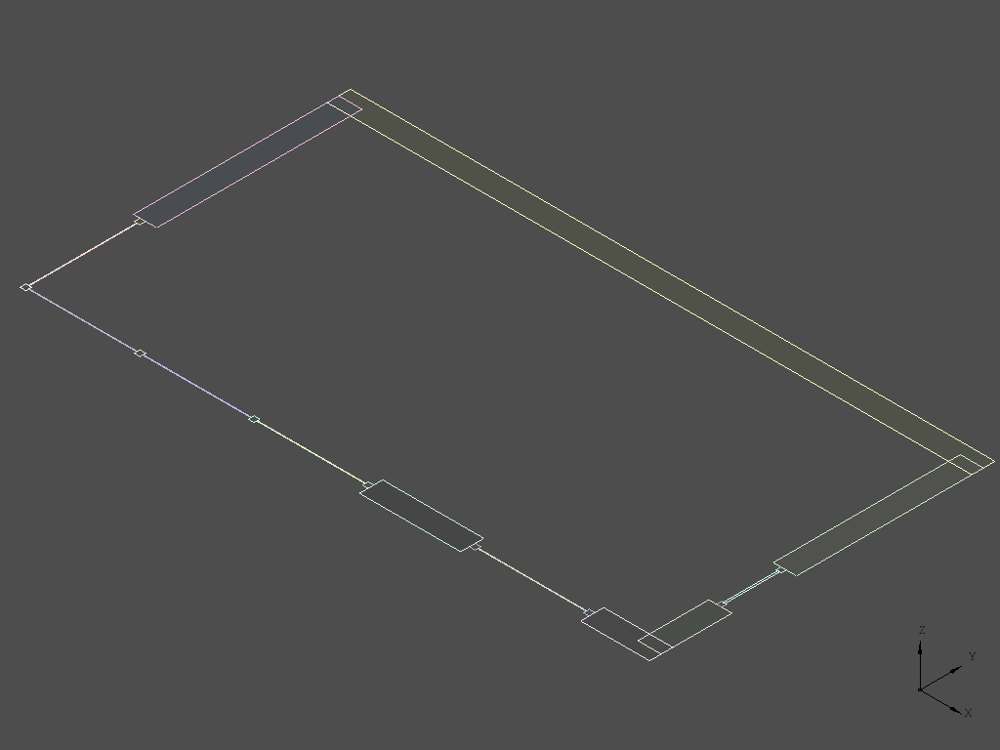

[This article contains several snippets of source code for illustration purposes, the full source code can be downloaded at the bottom]
Section information can be used for multiple purposes. This example is the first part of a project in which the aim is to be able to directly send information to a large 3D concrete printer. This printer will be able to print concrete buildings on a 1:1 scale on a building site. The goal is to control the printer directly from an IFC model. Since the printer will print one layer at a time, the first step is to derive section information from an IFC file. This is what this tutorial is about. As an example of the information that can be deduced from a section, the area that needs to be printed is calculated.
This example builds upon some of the concepts in "Using IfcOpenShell and pythonOCC to construct new geometry" and uses the same model of a simple house, called IfcOpenHouse.

Opening and viewing an IFC file
Just like the other example, the Qt pythonOCC display is shown and an IFC model is read. The elements that have a 3D representation (the instances of IfcProduct subtypes) are extracted and displayed. The IfcOpeningElements, which are a mechanism to extract openings from walls, and the IfcSite are left out. The products along with their shape are added to a list called product_shapes.
# Specify to return pythonOCC shapes from ifcopenshell.geom.create_shape()
settings = ifcopenshell.geom.settings()
settings.set(settings.USE_PYTHON_OPENCASCADE, True)
# Initialize a graphical display window
occ_display = ifcopenshell.geom.utils.initialize_display()
# Open the IFC file using IfcOpenShell
ifc_file = ifcopenshell.open(os.path.join(os.path.dirname(__file__), "IfcOpenHouse.ifc"))
# The geometric elements in an IFC file are the IfcProduct elements. So these are
# opened and displayed.
products = ifc_file.by_type("IfcProduct")
product_shapes = []
# For every product a shape is created if the shape has a Representation.
for product in products:
if product.is_a("IfcOpeningElement") or product.is_a("IfcSite"): continue
if product.Representation is not None:
shape = ifcopenshell.geom.create_shape(settings, product).geometry
product_shapes.append((product, shape))
In addition, two list are created to calculate the surface area of every cross section and the total area that needs to be printed for the entire building.
# Two list are initialized to calculate the surface area to be printed.
surface_areas_per_section = []
surface_areas_per_building = []
Creating the horizontal section plane
In the this part the section information is going to be extracted from the model. The starting_height of the first section can be chosen, along with the maximum_height of the last section and the height_step between the different sections. As long as the current section_height remains under the maximum_height sections are produced. To retrieve a section, a horizontal plane is created with the Z-coordinate set to the current section_height. From this plane a face is created, in this case of 20 x 20 meter (-10, 10, -10, 10). The section_face is displayed along with the model and after that the display is cleared.
# In this part the sections are created. You can enter the starting height, the
# maximum height and the height difference between each section.
starting_height = 0
maximum_height = 1.5
height_step = 0.5
section_height = starting_height
while section_height <= maximum_height:
print "Section height =", section_height
# A horizontal plane is created from which a face is constructed to intersect with
# the building. The face is transparently displayed along with the building.
section_plane = OCC.gp.gp_Pln(
OCC.gp.gp_Pnt(0, 0, section_height),
OCC.gp.gp_Dir(0, 0, 1)
)
section_face = OCC.BRepBuilderAPI.BRepBuilderAPI_MakeFace(section_plane, -10, 10, -10, 10).Face()
section_face_display = ifcopenshell.geom.utils.display_shape(section_face)
ifcopenshell.geom.utils.set_shape_transparency(section_face_display, 0.5)
for shape in product_shapes: ifcopenshell.geom.utils.display_shape(shape[1])

Determining the intersection of the faces
After creating the shape for the cross section, the intersection with every product of the building is determined. The result of this intersection is a shape that consists multiple loose edges. To be able to retrieve information from the section it’s important to not just have single edges, but connect them into wires and create faces from those wires.
# Each product of the building is intersected with the horizontal face
for product, shape in product_shapes:
section = OCC.BRepAlgoAPI.BRepAlgoAPI_Section(section_face, shape).Shape()

Creating wires and faces
For every section between starting_height and maximum_height the elements are intersected with the horizontal face. Since not all elements actually do intersect with the face, for some elements, no edges are reported. For example the windows do not, while they are above the current section plane in their entirety. These elements are filtered out by assuring the length of the list of edges is greater than zero. The unconnected loose edges are joined into wires and then for every wire a face is created and displayed together with the wires. Note that for a single element multiple wires, closed loops of edges, can be reported, which is the case for example for the door, which representation consists of multiple extruded rectangles.
# The edges of the intersection are stored in a list
section_edges = list(OCC.Utils.Topo(section).edges())
# If the length of the section_edges list is greater than 0 there is an
# intersection between the plane (at current height) and the product. Only in that
# case the product needs to be printed.
if len(section_edges) > 0:
print " {:<20}: {}".format(product.is_a(), product.Name)
# Open Cascade has a function to turn loose unconnected edges into a list of
# connected wires. This function takes handles (pointers) to Open Cascade's native
# sequence type. Hence, two sequences and handles, one for the input, one for the
# output, are created.
edges = OCC.TopTools.TopTools_HSequenceOfShape()
edges_handle = OCC.TopTools.Handle_TopTools_HSequenceOfShape(edges)
wires = OCC.TopTools.TopTools_HSequenceOfShape()
wires_handle = OCC.TopTools.Handle_TopTools_HSequenceOfShape(wires)
# The edges are copied to the sequence
for edge in section_edges: edges.Append(edge)
# A wire is formed by connecting the edges
OCC.ShapeAnalysis.ShapeAnalysis_FreeBounds.ConnectEdgesToWires(edges_handle, 1e-5, True, wires_handle)
wires = wires_handle.GetObject()
# From each wire a face is created
print " number of faces = %d" % wires.Length()
for i in range(wires.Length()):
wire_shape = wires.Value(i+1)
wire = TopoDS.wire(wire_shape)
face = OCC.BRepBuilderAPI.BRepBuilderAPI_MakeFace(wire).Face()
# The wires and the faces are displayed
ifcopenshell.geom.utils.display_shape(wire)
face_display = ifcopenshell.geom.utils.display_shape(face)
ifcopenshell.geom.utils.set_shape_transparency(face_display, 0.5)
Calculating the area that needs to be printed
Now the wires and faces for each subtype of IfcProduct are shown. Furthermore, they are available to query for additional information. For example: to calculate the area of each face, the total area for each section and finally the total area that needs to be printed for the whole building. For this purpose, the surface area of each face is added to a list surface_areas_per_section. After completing all products of a section, the sum of this list is calculated which leads to the total section surface area.
# Data about the wire is created to calculate the area
wire_data = OCC.ShapeExtend.ShapeExtend_WireData(wire, True, True)
wire_data_handle = OCC.ShapeExtend.Handle_ShapeExtend_WireData(wire_data)
# The surface area of the face is calculated and appended to the list
surface_area = abs(OCC.ShapeAnalysis.ShapeAnalysis_TotCross2D(wire_data_handle, face))
print " surface area =", surface_area
surface_areas_per_section.append(surface_area)
The script will continue as long as there are sections to process and will eventually print the total surface area for all sections. Partial output of the script is provided below.
Section height = 1.0
IfcWallStandardCase : South wall
number of faces = 2
surface area = 0.3852
surface area = 0.5652
IfcWallStandardCase : North wall
number of faces = 1
surface area = 3.6
IfcWallStandardCase : East wall
number of faces = 2
surface area = 1.044
surface area = 0.396
IfcWallStandardCase : West wall
number of faces = 1
surface area = 1.1466
IfcDoor : None
number of faces = 3
surface area = 0.0064
surface area = 0.0064
surface area = 0.0258
Download source code
This is a tutorial for an old version of PythonOCC. Download the full source code of this recipe here